정보통신기사(구) (2011-10-02 기출문제)
1과목: 디지털 전자회로
1. 그림과 같은 회로에서 출력측에 정전압을 유지할 수 있는 입력전압(Vi)의 범위는? (단, 제너 다이오드는 20[V]용이고 최대전류는 50[mA])
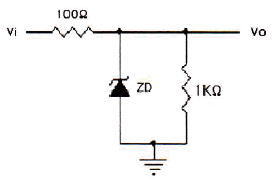
- 15 ~ 20[V]
- 22 ~ 27[V]
- 28 ~ 32[V]
- 35 ~ 40[V]
(정답률: 70%)

2. 다음 그림과 같은 회로의 용도는?
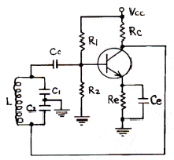
- 동조형 고주파 증폭기
- 하틀리 발진기
- 콜피츠 발진기
- 부궤환 증폭기
(정답률: 73%)
3. 그림과 같은 회로의 입력으로 스텝 전압을 인가할 때 출력파형에 가까운 것은?
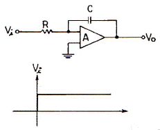
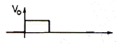
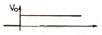
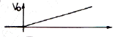
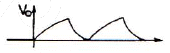
(정답률: 71%)
4. 그림에서 연산증폭기의 출력전압 Vo는?
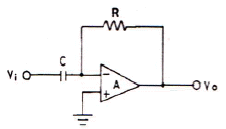
- Vo=-RCVi
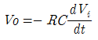
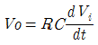
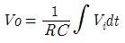
(정답률: 69%)
5. 그림과 같은 MOS 게이트의 기능을 나타내는 논리식은? (단, 부논리인 경우이다.)
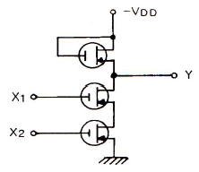
- Y=X1+X2
- Y=X1⋅X2
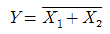
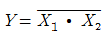
(정답률: 60%)
6. 다음 중 입력파형의 일정 크기 이상 또는 그 이하를 잘라내어 출력 파형을 얻는 회로는?
- 평활 회로
- 정류 회로
- 클리핑 회로
- 클램프 회로
(정답률: 70%)
7. 다음 중 B급 푸시풀 증폭기의 출력 파형에 나타나는 고조파는?
- 기수 고조파
- 우수 고조파
- 제2, 제3 고조파
- 기수와 우수의 모든 고조파
(정답률: 49%)
8. 출력전압이 40[V]인 증폭기에서 2-j2√3[V]의 전압을 궤환시켰을 때 궤환율 β는?
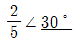
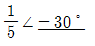
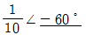
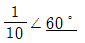
(정답률: 69%)
9. 다음 중 카르노도를 간략화한 결과는?
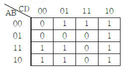
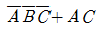
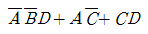
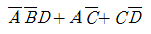
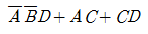
(정답률: 68%)
10. 다음 논리회로의 출력(Y)은?
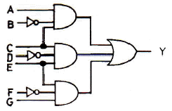
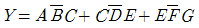
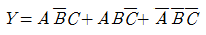
- Y=A+B+C+D+E+F+G
- Y=ABCDEFG
(정답률: 79%)
11. RC 결합 증폭회로에서 대역폭을 4배로 증가 시키려면 전압증폭이득을 약 몇 [dB] 감소시켜야 하는가?
- 0.5
- 4
- 6
- 12
(정답률: 63%)
12. 다음 중 궤환 증폭기에서 입ㆍ출력 임피던스가 모두 증가되는 것은?
- Voltage shunt
- Current series
- Voltage series
- Current shunt
(정답률: 69%)
13. 다음 그림의 논리회로와 등가인 회로는?
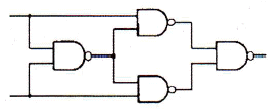
- Half adder
- Full adder
- Exclusive OR
- Exclusive NOR
(정답률: 67%)
14. 다음 그림의 역할로 옳은 것은?
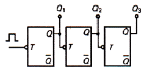
- 동기식 10진 카운터
- 비동기식 8진 카운터
- 동기식 5진 카운터
- 비동기식 3진 카운터
(정답률: 80%)
15. 자려발진기의 주파수안정도에 대한 설명으로 옳지 않은 것은?
- 발진회로의 저항 크기는 실효 Q에 영향을 주어 주파수가 변하므로 저항을 최소화한다.
- 발진회로에 접속된 부하의 변동은 실효임피던스가 변하므로 그 접속을 소결합한다.
- 발진기의 전원전압이 변하면 FET 및 트랜지스터의 동작점이 변하여 주파수가 불안정할 수 있다.
- 발진회로의 주위온도가 공진회로의 L, C 값의 변화를 초래하므로 주파수 변동을 일으킨다.
(정답률: 48%)
16. 다음 중 집적회로(IC)에서 고주파 특성을 제한하는 주요 요인은?
- 저항
- 다이오드
- 기생 커패시턴스
- 인덕턴스
(정답률: 62%)
17. 차동증폭기에서 차신호에 대한 전압이득이 Ad, 동상신호에 대한 전압이득이 Ac인 경우, 동상신호제거비(CMRR)는?
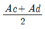
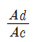
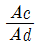
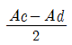
(정답률: 70%)
18. 다음 중 부궤환 증폭회로의 특징이 아닌 것은?
- 전압 이득이 감소한다.
- 잡음이 감소한다.
- 비직선 일그러짐이 감소한다.
- 대역폭이 좁아진다.
(정답률: 63%)
19. 불 대수식
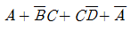
를 간략화한 것은?- 1
- A
- B
- C
(정답률: 70%)
20. 디지털 논리소자군 중에서 가장 낮은 전력소모 특징을 갖고 있으며 VLSI에 주로 사용되고 있는 것은?
- 표준 TTL(transistor-transistor logic)
- ECL(emitter-coupled logic)
- MOS(metal-oxide semiconductor)
- CMOS(complementary metal-oxide semiconductor)
(정답률: 78%)
2과목: 정보통신 시스템
21. 다음 중 에러 발생이 전송로의 우연적인 왜곡(동적인 불완전성)에 의한 원인이 아니고, 시스템적인 왜곡(정적인 불완전성)이 원인인 것은?
- 혼선
- 충격성 잡음
- 선로 손실
- 선로의 일시고장
(정답률: 75%)
22. 10[GHz]의 직접확산 시스템이 20[kb명]의 데이터 전송에 사용된다. 20[Mbps]의 확산부호를 BPSK 변조시킬 때 이 시스템의 처리이득은 몇 [dB]인가?
- 13[dB]
- 18[dB]
- 27[dB]
- 30[dB]
(정답률: 74%)
23. shannon의 채널 용량의 공식은? (단, B-대역폭, C-채널용량, S-신호, N-잡음)
- C = B log2(1+S/N)[bps]
- C = 2B log2(S/N)[bps]
- C = 2B log2(1+S/N)[bps]
- C = B log2(S/N)[bps]
(정답률: 76%)
24. 위성통신에서 다운링크(Down Link)란?
- 위성으로부터 송신 지구국으로의 회선
- 위성으로부터 수신 지구국으로의 회선
- 송신 지구국으로부터 수신 지구국으로의 회선
- 수신 지구국으로부터 송신 지구국으로의 회선
(정답률: 84%)
25. 20개의 전화국 간을 망형으로 연결하려면 필요한 회선수는?
- 190개
- 19개
- 200개
- 380개
(정답률: 85%)
26. 100[MHz] 반송파를 10[kHz] 정현파 신호로 광대역 주파수변조(FM)하여 최대 주파수 편이가 100[kHz]가 되었다. 다음 중 변조된 FM 신호의 가장 근사적인 대역폭의 값은 몇 [kHz]인가?
- 10
- 100
- 220
- 440
(정답률: 69%)
27. 광통신시스템에서 파장분할 다중화방식(WDM)을 사용하는 가장 큰 장점은?
- 전송거리가 길어진다.
- 전송용량을 크게 할 수 있다.
- 광수신기의 특성이 좋아진다.
- 전송손실이 감소한다.
(정답률: 69%)
28. IPv6에서 사용하는 주소가 아닌 것은?
- 유니캐스트(unicast)
- 애니캐스트(anicast)
- 멀티캐스트(multicast)
- 브로드캐스트(broadcast)
(정답률: 75%)
29. 입력측의 S/N=100, 출력측의 S'/N'=10인 저주파 증폭기의 잡음지수 NF는 몇 [dB]인가?
- 1[dB]
- 10[dB]
- 20[dB]
- 100[dB]
(정답률: 60%)
30. 세션(session) 서비스에서 세션 접속의 설정 및 세션 접속 해제에 필요한 절차의 기본 프로토콜 요소를 제공하는 것은?
- 핵(kernel) 기능단위
- 절충 해제(negotiated release) 기능단위
- 반이중(half-duplex) 기능단위
- 전이중(full-duplex) 기능단위
(정답률: 75%)
31. MTBF가 72시간, MTTR이 1시간이 걸린 시스템이 있다고 할 때, 가동율은 약 몇 [%]인가?
- 92.4
- 96.2
- 98.6
- 99.8
(정답률: 76%)
32. IEEE 802에서 무선 근거리통신망(wireless LAN)을 규정한 표준은?
- IEEE 802.1
- IEEE 802.6
- IEEE 802.9
- IEEE 802.11
(정답률: 85%)
33. 다음 중 No.7 신호방식의 특징이 아닌 것은?
- 공통선 신호방식이다.
- 기능별로 모듈화된 계층구조이다.
- 다양한 서비스 제공능력을 가진다.
- 패킷교환망 전용의 신호방식이다.
(정답률: 73%)
34. TCP/IP 트랜스포트 계층에서 오버헤드가 적고 매우 빠른 전달서비스를 제공하며, 신뢰성이 없는 비연결형 프로토콜은?
- IP
- TCP
- UDP
- ARP
(정답률: 78%)
35. IPv6에 대한 설명으로 거리가 가장 먼 것은?
- IPv6의 주소길이는 128비트이다.
- IPv4에서 옵션필드는 IPv6에서 확장헤더로 구현된다.
- 암호화와 인증 옵션들은 패킷의 신뢰성과 무결성을 제공한다.
- 패킷헤더에서 레코드 라우트 옵션은 IPv6에서 새로 생긴 것이다.
(정답률: 73%)
36. 수신기의 통과대역폭(B), 절대온도(T), 볼쯔만 상수(K), 잡음전력(P)의 관계식으로 맞는 것은?
- P = KB2T
- P = K2BT
- P = KBT2
- P = KBT
(정답률: 64%)
37. CDMA 이동통신 시스템의 무선경로상에서 페이딩 등에 의한 버스터 에러를 방지하기 위하여 송신측에서 데이터를 일정한 규칙에 따라 이산시키는 방법은?
- 심볼 반복
- 인터리빙
- 컨버루션 부호화
- 데이터 스크램블링
(정답률: 74%)
38. 다음 중 디지털 통신에서 펄스 성형(pulse shaping)을 하는 주된 이유로 가장 적합한 것은?
- 심볼간 간섭(IS)를 줄이기 위함
- 노이즈를 줄이기 위함
- 다중접속을 용이하게 하기 위함
- 채널 대역폭을 증가시키기 위함
(정답률: 79%)
39. 프로토콜의 구성요소 중 “속도 맞춤이나 정보의 순서”등 전달되는 정보 간 시간의 약속을 규정하는 것은?
- 의미(semantics)
- 구문(syntax)
- 동기(timing)
- 포맷(format)
(정답률: 87%)
40. 9600[baud]를 갖는 모뎀에서 2개의 비트가 1개의 신호로 변조되었을 때 초당 전송속도[bps]는?
- 19200
- 4800
- 9600
- 2400
(정답률: 55%)
3과목: 정보통신 기기
41. 팩시밀리에서 연속된 2차원 정보에 대해 부호화하는 주사선과 부호화 이전 주사선과의 상관관계를 부호화하는 방법은?
- Wyle 부호
- MR(Modified Read) 부호
- MH(Modified Huffman) 부호
- BCH 부호
(정답률: 63%)
42. OFDM 방식과 함께 사용되는 일반적인 변조 방식은 어느 것인가?
- ASK
- FSK
- MSK
- QPSK
(정답률: 68%)
43. 반송파 20[MHz]를 신호파 10[kHz]로 FM 변조 할 경우 주파수 변조지수와 점유주파수 대역폭은 각각 얼마인가? (단, 최대주파수 편이는 80[kHz]이다.)
- 4, 180[kHz]
- 8, 180[kHz]
- 4, 200[kHz]
- 8, 200[kHz]
(정답률: 61%)
44. WCDMA 방식에 대한 설명으로 옳은 것은?
- 주파수 간격은 1.5[MHz]이다.
- GPS로 기지국간 시간 동기를 맞추어 전송한다.
- 서로 다른 코드로 기지국을 구분한다.
- 칩 전송속도는 1.2288[Mcps]이다.
(정답률: 64%)
45. 블루투스에 대한 설명으로 거리가 가장 먼 것은?
- 2.4[GHz] 주파수 대역폭을 사용한다.
- 저가격, 저전력 무선 구현을 지원한다.
- 블루투스 규격은 크게 코어 규격과 프로파일 규격으로 구분한다.
- 주변조 방식은 PSK이다.
(정답률: 75%)
46. 광대역 무선채널에서 다중 경로 시간 지연확산(delay spread)으로 인한 페이딩으로 옳은 것은?
- 느린 페이딩(Slow Fading)
- 라이시안 페이딩(Rician Fading)
- 주파수 선택적 페이딩(Frequency Selective Fading)
- 빠른 페이딩(Fast Fading)
(정답률: 64%)
47. QPSK 변조방식의 대역폭 효율은 몇 [bps/Hz]인가?
- 1[bps/Hz]
- 2[bps/Hz]
- 4[bps/Hz]
- 8[bps/Hz]
(정답률: 59%)
48. CATV의 구성요소 중 수신안테나에서 수신한 각 채널의 방송신호를 중간 주파수대로 변환하여 조정한 후, VHF대로 재변환하여 중계 전송망으로 송출하는 역할을 하는 것은?
- 헤드 앤드
- 컨버터
- 원격 조정기
- 가입자 설비
(정답률: 84%)
49. 다음 중 간접 FM 변조방식은?
- 위상변조기를 이용한 회로
- 다이오드 리액턴스를 이용한 회로
- VCO(전압제어발진기)를 이용한 회로
- 리액턴스 FET를 이용한 회로
(정답률: 43%)
50. 통신제어장치의 기능에 대한 가장 적합한 설명은?
- 회선에 적합한 형태로 신호의 상호변환
- 중앙처리장치와 데이터 전송회선간 데이터 송수신제어
- 통신회선의 주파수 및 위상의 특성 제어
- 메모리장치의 데이터 버스 제어
(정답률: 74%)
51. 인공위성이나 우주 비행체는 매우 빠른 속도로 운동하고 있으므로 전파발진원의 이동에 따라서 수신주파수가 변하는 현상은?
- 페이져 현상
- 플라지마 현상
- 도플러 현상
- 전파지연 현상
(정답률: 86%)
52. 다음 중 DSB 통신방식에 비하여 SSB 통신방식의 특징에 대한 설명으로 거리가 가장 먼 것은?
- 주파수 이용효율이 낮다.
- 양질의 통신이 가능하다.
- 전력 효율이 좋다.
- 비화성이 있다.
(정답률: 59%)
53. CDMA 대역확산 통신기술을 이용하여 다중경로전파 가운데 원하는 신호만을 분리할 수 있는 수신기는?
- 레이크 수신기
- Muti channel 수신기
- 헤테로다인 수신기
- VLR 수신기
(정답률: 75%)
54. 다음 중 FM 수신기에서 주로 사용되는 잡음억제회로로 거리가 가장 먼 것은?
- Limiter 회로
- Squelch 회로
- Muting 회로
- Eliminator 회로
(정답률: 60%)
55. 위성통신의 저잡음 증폭기로 많이 사용되는 것은?
- Parametric 증폭기
- Magnetron 증폭기
- Tunnel 증폭기
- GaAs FET 증폭기
(정답률: 82%)
56. 다음 중 실효선택도(Effective Selectivity)에 속하지 않는 것은?
- 혼변조
- 스퓨리어스 레스폰스
- 감도억압효과
- 상호변조
(정답률: 66%)
57. 다음 중 대역확산 통신방식에 의해 필요로 하는 대역보다 넓은 대역으로 신호를 전송하는 방식은?
- CDMA
- FDMA
- SDMA
- TDMA
(정답률: 72%)
58. 다음 중 DBS에 대한 설명으로 거리가 가장 먼 것은?
- Up-link 주파수 대역은 4[GHz]이다.
- 방송 위성은 정지궤도 위성을 이용한다.
- 한 개의 위성으로 한반도 전체를 서비스할 수 있다.
- 가정에서는 소형 파라볼라 안테나를 사용한다.
(정답률: 63%)
59. 다음 중 무선수신기에 고주파증폭기를 사용하는 목적으로 거리가 가장 먼 것은?
- 페이딩을 방지한다.
- 신호대 잡음비를 개선한다.
- 선택도를 개선한다.
- 영상신호에 의한 혼신이 적어진다.
(정답률: 48%)
60. 텔레포니의 핵심 기술인 VoIP의 구성요소로 거리가 가장 먼 것은?
- 단말장치
- 게이트웨이
- 게이트키퍼
- 라우터
(정답률: 63%)
4과목: 정보전송 공학
61. 표준직경이 30[μm]인 광섬유 케이블이 찌그러져 최대직경이 32.6[μm], 최소직경이 28.4[μm]가 되었을 때, 이 광섬유 케이블의 비원률은 몇 [%]인가?
- 7[%]
- 14[%]
- 28[%]
- 32[%]
(정답률: 63%)
62. OFDM에 대한 설명으로 적합하지 않은 것은?
- FFT(Fast Fourier Transform)에 의한 변복조 처리가 가능하다.
- 다중 경로 페이딩에 강하다.
- 반송파의 주파수 옵셋과 위상잡음에 민감하다.
- 사용자의 데이터 열에 따라 반송주파수를 변화한다.
(정답률: 62%)
63. 전파가 다중 반사되어 수신점에 도달하게 되므로 이들 전파의 도달시간의 차이로 인해 수신점에서 심벌(symbol)이 겹치는 현상이 일어나는데 이를 무엇이라고 하는가?
- 동일채널간섭
- 지연확산
- 도플러 효과
- 대척점 효과
(정답률: 50%)
64. 전송 에러 발생의 주요 요인에 속하지 않는것은?
- 잡음
- 감쇠 왜곡
- 선형 왜곡
- 지연 왜곡
(정답률: 66%)
65. 데이터 전송시 블록으로 나누어 전송하는 이유가아닌 것은?
- 전송이 길어지면 에러가 일어날 확률이 높으므로
- 한 회선을 오랫동안 점유함으로써 발생되는 지연을 최소화시키기 위해
- 수신측 버퍼 크기의 제한 때문에
- 보내는 정보의 속도를 빠르게 하기 위해서
(정답률: 65%)
66. 다음 중 누화, 잡음, 왜곡 등의 발생률이 낮고 전송특성의 질이 저하된 선로에 적합한 다중화 방식은?
- AM 주파수분할 다중화
- FM 주파수분할 다중화
- PCM 시분할 다중화
- PM 주파수분할 다중화
(정답률: 69%)
67. 링크를 가장 효율적으로 사용할 수 있으나, 프레임 재순서화 기능이 요구되는 등 시스템 구현이 복잡한 단점을 가지고 있는 ARQ 방식은?
- Simple ARQ
- Go back N ARQ
- Stop and Wait ARQ
- Selective Repeat ARQ
(정답률: 72%)
68. 전용회선의 전송특성 열화 요인 중 정상 열화 요인에 속하지 않는 것은?
- 누화
- 위상지터
- 랜덤잡음
- 진폭히트
(정답률: 49%)
69. 정합필터에 대한 설명 중 적합하지 않은 것은?
- 디지털 통신에서 사용된다.
- 비동기 검파기로 동작한다.
- 정합필터의 출력은 입력신호의 에너지와 같다.
- 펄스의 존재 유무를 판별하는 시점에서 신호성분을 증가시키고 잡음성분을 감소시키는 역할을 수행한다.
(정답률: 63%)
70. 다음 중 CMI 코드에 대한 설명으로 적합하지 않은 것은?
- CEPT 다중화 계위의 4계위에서 사용한다.
- 직류 성분이 존재하지 않으며 동기 효과가 우수하다.
- 전송부호의 클록 주파수는 입력신호 주파수의 2배가 된다.
- 1은 한 펄스의 폭을 2개로 나누어 반구간은 양 펄스, 나머지 반구간은 음 펄스로 구성되고, 0은 1과 반대로 구성된다.
(정답률: 67%)
71. HDLC 프로토콜에 대한 설명으로 옳지 않은 것은?
- 비트방식(Bit Oriented)의 프로토콜이다.
- 프레임의 시작과 끝에는 플래그가 위치한다.
- 주소영역이 모두 1인 경우는 모든 스테이션에 프레임을 전달하기 위한 것으로 사용된다.
- Full Duplex 방식에서는 사용할 수 없다.
(정답률: 72%)
72. 다음 중 지터에 대한 설명으로 적합하지 않은 것은?
- 타이밍 편차 또는 지터 잡음이라 한다.
- 펄스열이 왜곡되어 타이밍 펄스가 흔들려서 발생한다.
- 타이밍회로의 동조가 부정확하여 발생한다.
- 일정 구간마다 재생중계기에 의해 제거되므로 누적되지 않는 잡음이다.
(정답률: 68%)
73. 가상회선방식에 대한 설명 중 적합하지 않은 것은?(오류 신고가 접수된 문제입니다. 반드시 정답과 해설을 확인하시기 바랍니다.)
- 모든 패킷은 설정된 경로에 따라 전송된다.
- 패킷을 전달하는 신뢰성은 데이터그램 방식보다 떨어진다.
- 경로가 미리 결정되기 때문에 각 노드에서의 데이터 패킷의 처리속도가 그만큼 빠르게 된다.
- 수신지의 마지막 노드에서는 송신지에서 송신한 순서와 다르게 패킷이 도착할 수 있다.
(정답률: 63%)
74. 베이스밴드(base band) 전송에서 전송 신호의 상태가 3종류로 나타나는 방식은?
- 단류 NRZ 스페이스 방식
- 바이페이즈(biphase) 방식
- 바이폴라(bipolar) 방식
- 복류 NRZ 방식
(정답률: 67%)
75. 마이크로파 통신의 특징이 아닌 것은?
- 광대역 통신이 가능하다.
- 외부 잡음의 영향이 작다.
- 전송지연이 많이 발생한다.
- 기상 조건에 따라 전송품질이 영향을 받는다.
(정답률: 49%)
76. 다음 디지털 변조방식 중 대역폭 효율이 가장 높은 것은?
- 2진 ASK
- 2진 FSK
- 2진 PSK
- 4진 PSK
(정답률: 73%)
77. HDLC가 사용하는 세 가지의 동작모드에 해당하지 않은 것은?
- 절단모드(DCM)
- 정규 응답모드(NRM)
- 비동기 응답모드(ARM)
- 비동기 균형모드(ABM)
(정답률: 68%)
78. 다중모드 광케이블에서 발생하는 분산으로 가장 적합한 것은?
- 색분산
- 모드분산
- 색분산, 모드분산
- 도파로분산
(정답률: 69%)
79. 다음 중 동축케이블과 비교하여 광섬유케이블의 특징으로서 적합하지 않는 것은?
- 가볍다
- 부피가 작다
- 광대역이다
- 가공이 쉽다
(정답률: 80%)
80. OSI 참조모델(7 Layer) 중 6계층의 기능에 대한 설명으로 가장 적합한 것은?
- 정보전송을 위한 데이터회선의 설정, 유지, 해제 기능 수행
- 다양한 정보의 표현 형식을 공통의 전송형식으로 변환, 암호화, 압축 등의 기능 수행
- 통신망의 품질을 보상하고 에러검출, 정정 및 다중화 기능 수행
- 응용 프로세서 간의 정보교환 및 인터페이스 등의 응용 기능 수행
(정답률: 72%)
5과목: 전자계산기일반 및 정보통신설비기준
81. 파이프라인에 의한 이론적 최대 속도 증가율을 내지 못하는 주된 이유가 아닌 것은?
- 병목현상
- 자원회피
- 데이터 의존성
- 분기 곤란
(정답률: 59%)
82. Micro processor에서 다음 실행할 번지가 저장되는 곳은?
- Buffer register
- Program Counter
- Accumulator
- Instruction register
(정답률: 75%)
83. 고급 언어(high-level language)에 대한 특징으로 가장 옳은 것은?
- computer 하드웨어와 compiler에 종속적이다.
- computer 하드웨어에 종속적이고, compiler에 독립적이다.
- computer 하드웨어와 compiler에 독립적이다.
- computer 하드웨어에 독랍적이고, compiler에 종속적이다.
(정답률: 64%)
84. 2진수 1001에 대한 해밍 코드로 옳은 것은? (단, 짝수 패리티 체크를 사용한다.)
- 0011001
- 1000011
- 0100101
- 0110010
(정답률: 78%)
85. 부동소수점 표현시 수들 사이의 곱셈 알고리즘 과정에 포함되지 않는 것은?
- 0(zero)인지 여부를 조사한다.
- 가수의 위치를 조정한다.
- 가수를 곱한다.
- 결과를 정규화한다.
(정답률: 73%)
86. 10진수 47.625를 2진수로 변환한 것으로 옳은 것은?
- 101111.111
- 101111.010
- 101111.001
- 101111.101
(정답률: 76%)
87. ASCII 코드의 존 비트와 디지트 비트의 구성으로 옳게 표시한 것은?
- 존 비트 : 4, 디지트 비트 : 3
- 존 비트 : 3, 디지트 비트 : 4
- 존 비트 : 4, 디지트 비트 : 4
- 존 비트 : 3, 디지트 비트 : 3
(정답률: 74%)
88. 누산기(Accumulator)의 역할은?
- 연산 명령의 해독 장치
- 연산 명령의 기억 장치
- 연산 결과의 일시 기억 장치
- 연산 명령 순서의 기억 장치
(정답률: 76%)
89. 자바언어에 대한 설명 중 틀린 것은?
- 분산환경을 지원하는 차세대 객체지향 언어이다.
- 다중 스레드(thread)를 지원하는 언어이다.
- 프로그래밍 언어이다.
- 메모리를 겹쳐 쓰기(overwrite)할 수 있다.
(정답률: 81%)
90. 다음 프로그램 중 제어프로그램이 아닌 것은?
- 자료, 파일 관리 프로그램
- 작업 관리 프로그램
- 언어 번역 프로그램
- 기억영역 관리 프로그램
(정답률: 55%)
91. 선로설비와 회선 상호간의 절연저항은 직류 500[V] 절연저항계로 측정하여 얼마 이상이 되어야 하는가?
- 1[MΩ]
- 5[MΩ]
- 10[MΩ]
- 20[MΩ]
(정답률: 67%)
92. 다음 ( ) 안에 들어갈 내용으로 가장 적합한 것은?
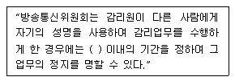
- 6월
- 1년
- 2년
- 3년
(정답률: 67%)
93. 방송통신위원회가 전기통신기본계획을 수립하고자 할 때, 미리 관계행정기관의 장과 협의하여야 할 사항은?
- 전기통신의 이용효율에 관한 사항
- 전기통신의 질서유지에 관한 사항
- 전기통신사업에 관한 사항
- 전기통신기술의 진흥에 관한 사항
(정답률: 63%)
94. 기간통신사업자가 전기통신설비의 설치 공사를 하기 위하여 필요한 경우 타인의 토지 등을 일시 사용할 수 있는 기간은?
- 6개월을 초과할 수 없다.
- 3개월을 초과할 수 없다.
- 2개월을 초과할 수 없다.
- 1개월을 초과할 수 없다.
(정답률: 76%)
95. 다음 ( ) 안에 들어갈 내용으로 가장 적합한 것은?
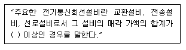
- 10억원
- 30억원
- 50억원
- 100억원
(정답률: 65%)
96. 모든 이용자가 언제 어디서나 적정한 요금으로 제공 받을 수 있는 기본적인 전기통신역무를 말하는 것은?
- 정보통신 역무
- 전기통신 역무
- 보편적 역무
- 특수통신 역무
(정답률: 77%)
97. 다음 ( ) 안에 들어갈 내용으로 가장 적합한 것은?
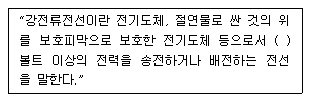
- 110
- 220
- 300
- 600
(정답률: 78%)
98. 다음 ( ) 안에 들어갈 내용으로 가장 적합한 것은?(관련 규정 개정전 문제로 기존 정답은 3번이며 여기서는 3번을 누르면 정답 처리 됩니다. 자세한 내용은 해설을 참고하세요.)
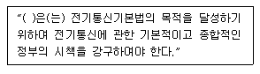
- 국무총리
- 지식경제부장관
- 방송통신위원회
- 정보통신정책심의위원회
(정답률: 78%)
99. 공사를 설계한 용역업자는 그가 작성한 실시설계도서를 해당 공사가 준공된 후 몇 년간 보관하여야 하는가?
- 1년
- 3년
- 5년
- 7년
(정답률: 66%)
100. 다음 중 기술기준에 의한 “단말장치”의 정의로 적합한 것은?
- 통신회선에 접속하는 전화교환기, 변복조기 등을 말한다.
- 방송통신설비와 접속하기 위하여 이용자가 설치하는 잭, 플러그, 버튼 등을 말한다.
- 정보통신에 이용되는 정보통신기기 본체와 이에 부속되는 입출력장치 등 기타의 기기를 말한다.
- 방송통신망에 접속되는 단말기기 및 그 부속설비를 말한다.
(정답률: 65%)